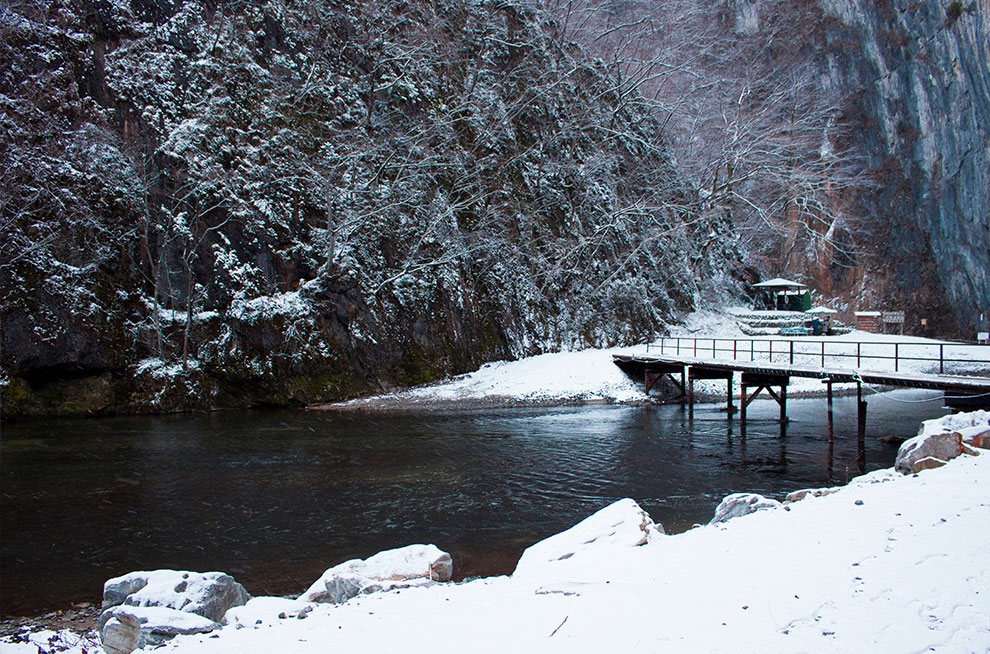
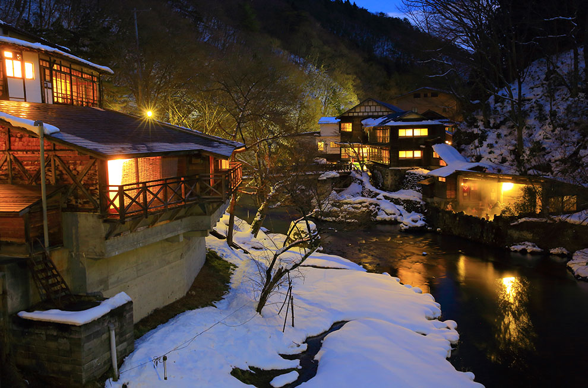
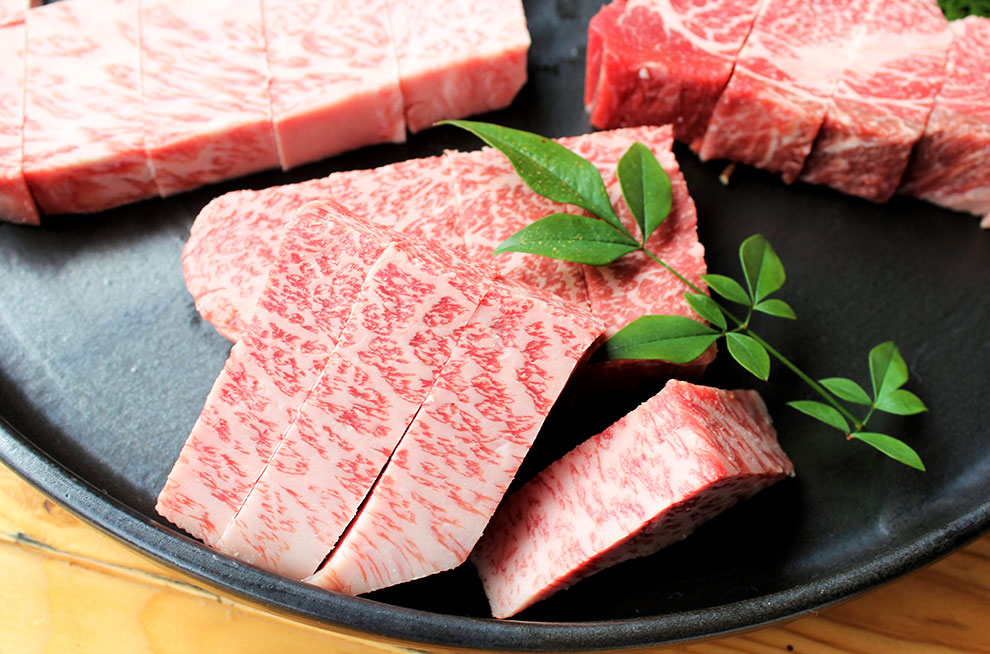
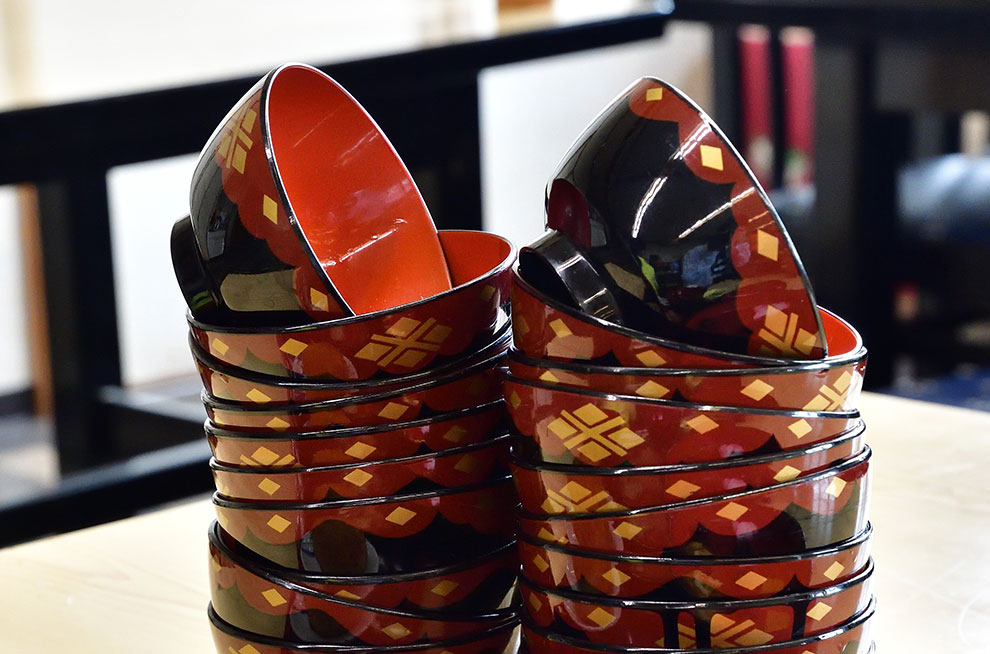
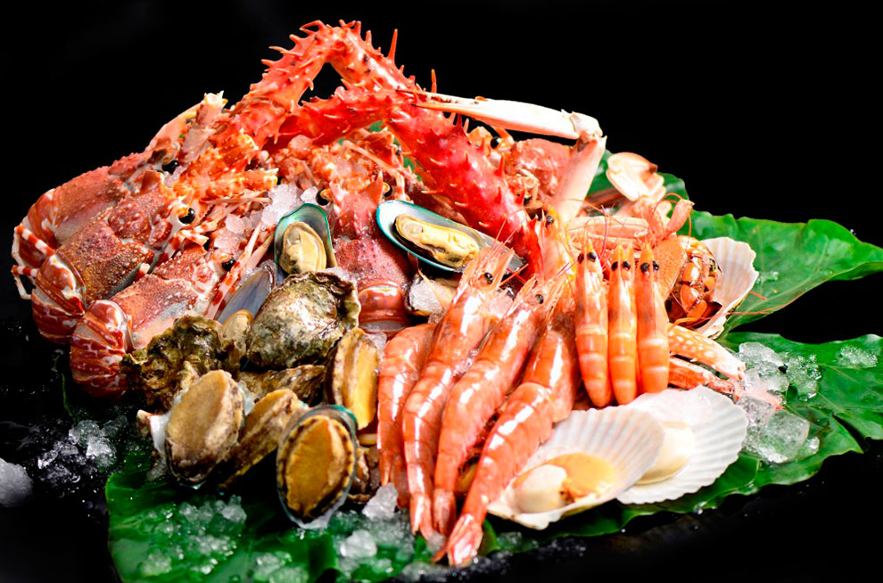

搭乘時間：2018/10/28-2019/03/30
| 航班號 | 航線 | 起飛時間 | 抵達時間 | 飛行日 |
| IT258 | 桃園－花卷 | 11:50 | 16:10 | 每周三、六 |
| IT259 | 花卷－桃園 | 17:25 | 20:55 | 每周三、六 |

巴士：

| 單程車資 區間 | 大人 | 兒童 |
| 盛岡駅⇔花卷空港間 | 1,400円 | 700円 |
| 花卷空港駅⇔花卷空港間 | 290円 | 150円 |
共乘計程車 Airport Liner：
▪由花卷機場前往水沢・江刺・平泉・一関、花卷南温泉、東和・遠野、鶯宿温泉等方向。
計程車：
▪岩手花卷機場→花卷機場站：約10分鐘
▪岩手花卷機場→花卷站：約13分鐘
▪岩手花卷機場→新花卷站：約10分鐘


安比高原滑雪場
日本規模最大的滑雪場，擁有品質絕佳的粉雪，從初學者到專業級選手都能享受滑雪的樂趣

猊鼻溪
日本百景名勝之一，四季風情不同；冬季還有限定的暖爐桌船遊河體驗，欣賞絕景也不用擔心受寒

花卷溫泉
岩手縣最大的溫泉鄉，冬季在露天風呂中享受暖呼呼的溫泉環繞，頭上則是雪花紛飛，超級過癮


岩手牛
在日本國內大賽中榮獲過11次冠軍的岩手牛，可說是頂級中的頂級，絕對必吃

椀子蕎麥麵
岩手縣獨特的蕎麥麵吃法，一碗一口，直到將蓋子蓋上碗上，看看自己能吃下幾碗

海鮮
岩手縣的海域有三道海流交會，是世界三大漁場之一，海鮮種類超豐富，不吃怎行